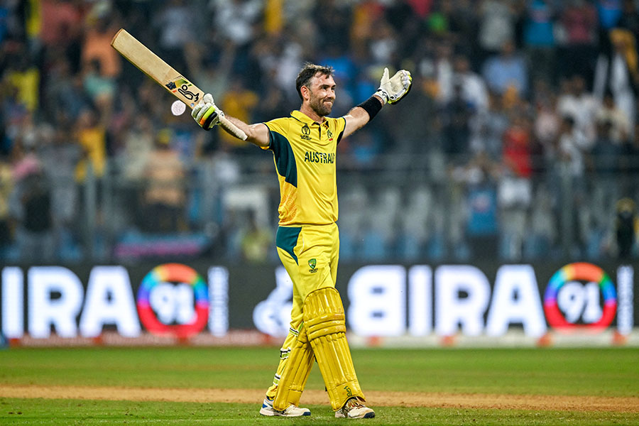

Maxwell
Glenn James Maxwell (born 14 October 1988) is an Australian professional cricketer. He has played for the Australia national cricket team in all formats of the game since 2012, although he is primarily a One Day International and Twenty20 International specialist.[3] Maxwell is an all-rounder who bats right-handed and bowl off-break deliveries. Domestically he played for Victoria and Melbourne Stars.[4] He was part of the Australian squads that won the 2015 Cricket World Cup and the 2021 T20 World Cup.
Maxwell made his professional debut in 2010. Known for his dramatic shot making and improvisation in short forms of the game,[5] in 2011, he set a new record for the fastest ever half-century in Australian domestic one day cricket, scoring 50 runs from 19 balls.[6] Maxwell has played domestic Twenty20 cricket in both India and England and has scored centuries in all three international cricket formats, one of only 13 cricketers who have achieved this feat.[7] In November 2017 he scored his maiden double-century, scoring 278 in the Sheffield Shield[8][9] and in October 2023 set a new record for the fastest century scored at a Cricket World Cup, reaching his century in 40 balls against the Netherlands.
In November 2023, he also set a new record for the fastest double century scored in a World Cup, becoming just the third person to do so.[10] He also became the first male batsman to score a double century for Australia in ODIs.[11]

To know more about cse
click here